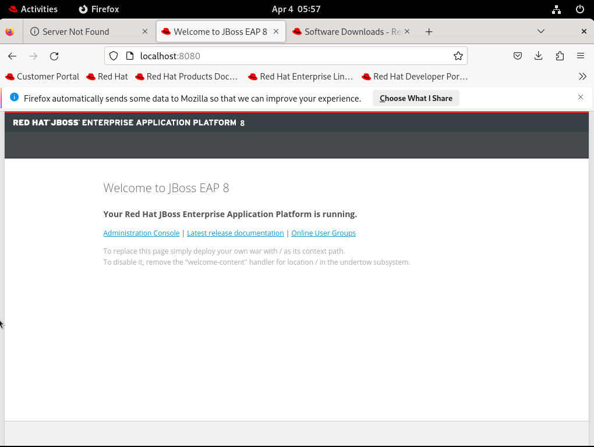
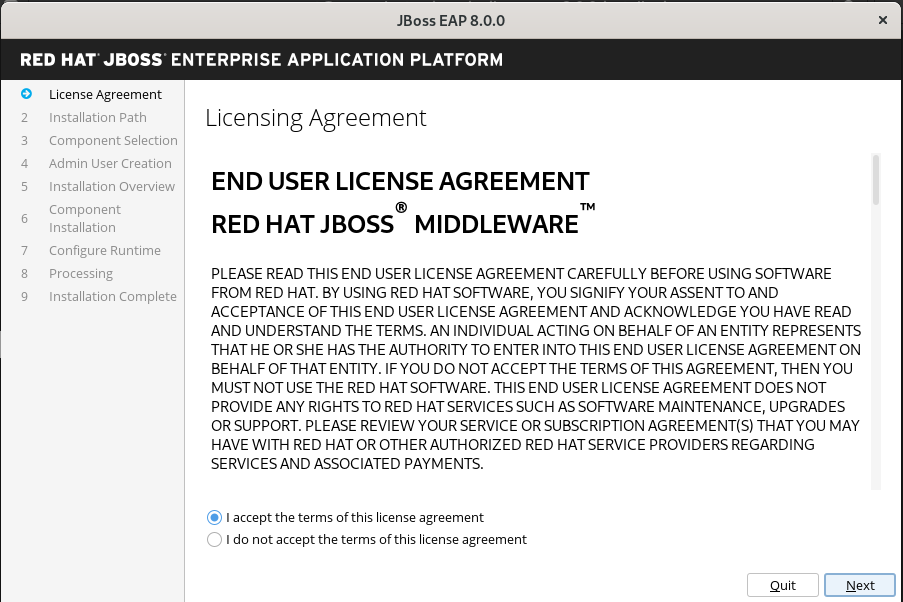
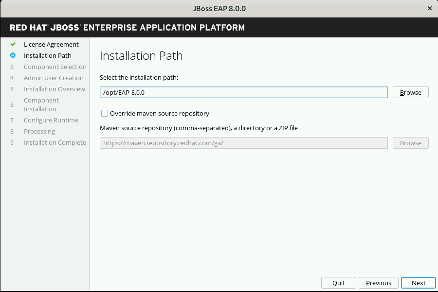
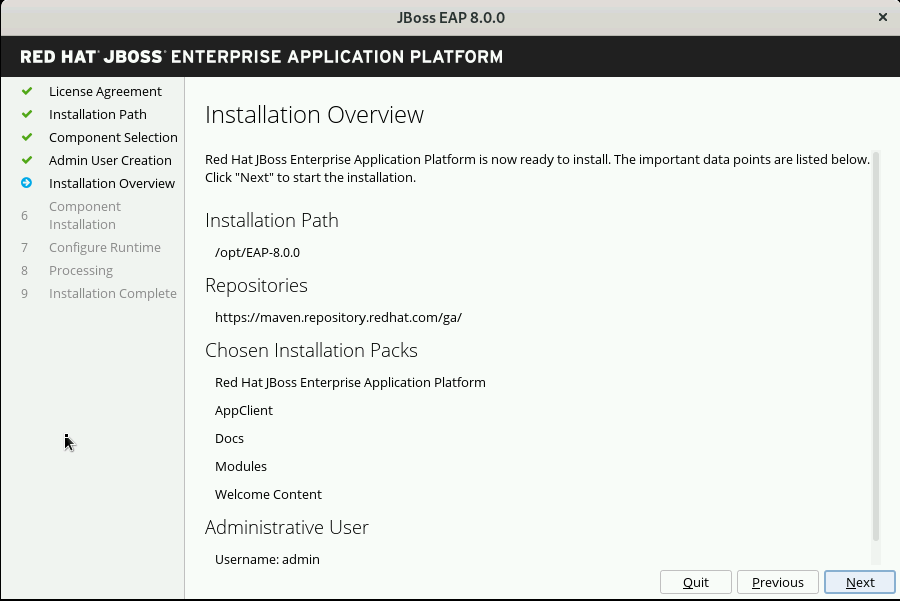
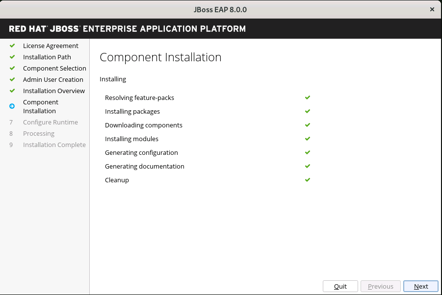
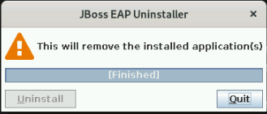

Red Hat JBoss Enterprise Application Platform 8 Installation Methods
You can install JBoss EAP 8.0 by using one of the following installation methods:
-
Using the zip or archive file
-
Using the RPM installation method
-
Using the JAR installer
Let us see each of these methods in detail.
Installing JBoss EAP using the Zip file or archive file
-
In this method, the JBoss EAP 8 is distributed as a zip or archive file that you can extract and execute on an operating system (OS) with OpenJDK 17 installed.
-
These file contain all the libraries, configuration files, and scripts needed to start JBoss EAP, without further customization.
-
This method is preferred when:
-
You don’t have GUI support for the EAP 8 installation.
-
You don’t want to have any custom configuration.
-
You need text based console for the EAP 8 installation.
-
-
Due to its portable nature, you can use it on multiple platforms(like Windows, Linux, etc.) and it requires OpenJDK 17 installed on the host OS.
Installing JBoss EAP by using the RPM installation method
-
JBoss EAP 8 is available as an RPM package for users with a valid subscription to the JBoss Enterprise Application Platform sub-channel, in the JBoss Enterprise Application Platform group.
-
The yum command downloads all the RPMs to the host OS, and automatically installs all the files needed to start and manage JBoss EAP.
-
The RPM installation method is only valid for Red Hat Enterprise Linux (RHEL) operating system and not for Windows server.
-
This method is preferred when you want JBoss EAP service files to be installed for the RHEL operating system.
Installing JBoss EAP using the JAR installer
-
This provides an "interactive" graphical approach where you can customize the JBoss EAP installation process.
-
In this method, the jar file is a Java based application that is responsible for providing a step-by-step way to customize the environment setup.
-
This method is preferred when:
-
You want to install on multiple platforms like Windows server, Linux etc.
-
You need either graphical interface or a text based console.
-
You want to customise JBoss EAP installation.
-
-
Due to its flexible nature, the installer can install JBoss EAP by using a response file, with all the options passed as an XML file.
Pre-requisites
-
You have installed Red Hat supported OpenJDK 17 on RHEL 9 server.
-
Recommended to create a separate jboss user account with no shell access (/sbin/nologin).
-
Recommended to download all installation file under /opt partition.
-
Recommended to ensure that there is enough space under /opt partition (minimum 800MB).
(Optional) Pre-configured RHEL9 settings using Vagrant
-
You can install vagrant on your host machine.
-
You can refer EAP8 vagrant settings repository using Vagrantfile present at "admin1/eap8-vagrant/" to configure the RHEL 9 server for JBoss to get started.
Lab 1: Installing JBoss EAP using the Zip file
Outcome: In this lab, you download jboss-eap-8.0.0-installation-manager.zip file and install JBoss EAP as a standalone server that can be accessed at http://localhost:8080.
-
Take GUI access of RHEL 9 server.
-
Download the zip or archive file by following below steps:
-
Open a firefox browser.
-
Log in to the Red Hat Customer Portal.
-
Click Downloads.
-
Select
Red Hat JBoss Enterprise Application Platformfrom theProduct Downloadslist. -
In the Version drop-down list, select
8.0. -
Find
Red Hat JBoss Enterprise Application Platform 8.0 Installation Managerin the list if you want to download zip file or findRed Hat JBoss Enterprise Application Platform 8.0.0in the list if you want to download archive file and click theDownloadlink. This lab assumes that you have downloaded the zip file. -
The file would get downloaded under your
~/Downloadsdirectory.
-
-
Open a terminal instance and copy
jboss-eap-8.0.0-installation-manager.zipfile present under~/Downloadsdirectory to/optdirectory as a sudo user.[vagrant@server ~]$ sudo cp ~/Downloads/jboss-eap-8.0.0-installation-manager.zip /opt
-
Swtich to
/optdirectory and uncompress the JBoss EAP zip file as sudo user.[vagrant@server ~]$ cd /opt/ [vagrant@server opt]$ sudo unzip jboss-eap-8.0.0-installation-manager.zip
-
Switch to the
bindirectory present under the uncompressedjboss-eap-8.0.0-installation-manager.zipfile.[vagrant@server opt]$ cd jboss-eap-installation-manager-1.1.6.Final-redhat-00001/bin/ [vagrant@server bin]$
-
Install JBoss EAP by executing the
jboss-eap-installation-manager.shscript with below command line options as a sudo user.[vagrant@server bin]$ sudo ./jboss-eap-installation-manager.sh install --profile eap-8.0 --dir eap-8 Installing profile: eap-8.0 Using channels: # eap-8.0 manifest: org.jboss.eap.channels:eap-8.0 ...output omitted...
Review the end user license agreement, and follow the rest of the prompts to install JBoss EAP.
Accept the agreement(s) [y/N]y Feature-packs resolved. Packages installed. Downloading artifacts 2/619(0%) jackson-jakarta-rs-json-provider-2.15.2.redhat-000.... Downloading artifacts 8/619(1%) wildfly-clustering-ee-infinispan-8.0.0.GA-redhat-0.... ...output omitted... Downloaded artifacts. JBoss modules installed. Configurations generated. JBoss examples installed. Server created in /opt/jboss-eap-installation-manager-1.1.6.Final-redhat-00001/bin/eap-8 Operation completed in 541.33 seconds.
-
Start the JBoss EAP standalone server using the start script present under
/opt/jboss-eap-installation-manager-1.1.6.Final-redhat-00001/bin/eap-8/bin/standalone.sh.[vagrant@server bin]$ sudo -u jboss /opt/jboss-eap-installation-manager-1.1.6.Final-redhat-00001/bin/eap-8/bin/standalone.sh ========================================================================= JBoss Bootstrap Environment JBOSS_HOME: /opt/jboss-eap-installation-manager-1.1.6.Final-redhat-00001/bin/eap-8 JAVA: java ...output omitted... 05:56:12,465 INFO [org.jboss.as] (Controller Boot Thread) WFLYSRV0051: Admin console listening on http://127.0.0.1:9990 05:56:12,488 INFO [org.jboss.as] (Controller Boot Thread) WFLYSRV0025: JBoss EAP 8.0 Update 1.0 (WildFly Core 21.0.5.Final-redhat-00001) started in 3561ms - Started 282 of 524 services (318 services are lazy, passive or on-demand) - Server configuration file in use: standalone.xml
-
Navigate to the JBoss EAP console at
http://localhost:8080using the browser and confirm that you are able to see the JBoss EAP home page.
|
The jboss-eap-installation-manager is also supported on Microsoft Windows. To use this script on a Windows machine, replace the |
-
You can shutdown the JBoss EAP 8 server by pressing
Ctrl+Cin the terminal window where you started JBoss EAP 8.
Lab 2: Installing JBoss EAP using RPM method
Outcome: In this lab, you subscribe your RHEL9 server and install JBoss EAP package. You configure the JBoss EAP server as a standalone server that can be accessed at http://localhost:8080.
-
Open a terminal instance and subscribe your RHEL9 server to the Red Hat Enterprise Linux Server base software repository using your
subscription-managercredentials.[vagrant@server ~]$ sudo subscription-manager register --auto-attach Registering to: subscription.rhsm.redhat.com:443/subscription Username: XXXXX Password:XXXX
-
Enable JBoss EAP 8 repository.
[vagrant@server ~]$ sudo subscription-manager repos --enable=jb-eap-8.0-for-rhel-9-x86_64-rpms
-
Install JBoss EAP 8.
[vagrant@server ~]$ sudo dnf groupinstall jboss-eap8 -y
|
The default |
-
Execute the JBoss EAP standalone server script present at
EAP_HOME/bin/standalone.shas a sudo user.[vagrant@server ~]$ sudo -u jboss /bin/sh /opt/rh/eap8/root/usr/share/wildfly/bin/standalone.sh -c standalone.xml -b 0.0.0.0
-
Navigate to the JBoss EAP console at
http://localhost:8080using browser and confirm you are able to see the JBoss EAP home page. -
Shutdown the JBoss EAP 8 server by pressing
Ctrl+Cin the terminal window where you started JBoss EAP 8.
Lab 3: Installing JBoss EAP using GUI method and as a RHEL service
Outcome: In this lab, you download jboss-eap-8.0.0-installer.jar file and install JBoss EAP as a standalone server that can be accessed at http://localhost:8080. You further configure JBoss EAP to run as a service in RHEL to enable the JBoss EAP service to start automatically when the RHEL server starts.
-
Take GUI access of RHEL 9 server. You can install graphical pacakges if not already present and set the system to boot into grahical mode using below commands.
sudo dnf groupinstall "Server with GUI" -y sudo systemctl set-default graphical.target sudo systemctl isolate graphical.target
If you don’t have GUI access, you can take access using X11 forwarding on your local machine.
-
Download the
jboss-eap-8.0.0-installer.jarby following below steps:-
Log in to the Red Hat Customer Portal.
-
Click Downloads.
-
Select
Red Hat JBoss Enterprise Application Platformfrom theProduct Downloadslist. -
In the Version drop-down list, select
8.0. -
Find
Red Hat JBoss Enterprise Application Platform 8.0 Installerin the list and click theDownloadlink. -
The file would get downloaded under your
~/Downloadsdirectory.
-
-
Open a terminal instance and copy the
jboss-eap-8.0.0-installer.jarfile present under~/Downloadsdirectory to/optdirectory as a sudo user.[vagrant@server ~]$ sudo cp ~/Downloads/jboss-eap-8.0.0-installer.jar /opt
-
Swtich to
/optdirectory and execute the JBoss EAP graphical installer using thejava -jarcommand.[vagrant@server ~]$ cd /opt [vagrant@server opt]$ sudo java -jar jboss-eap-8.0.0-installer.jar
-
Choose your preferred language for the installer(in this case
English) and then clickOK.
-
Agree with the prompt for The EULA for RED HAT JBOSS MIDDLEWARE by selecting "I accept the terms of this license agreement", and then click Next.
 -
Select the installation path as
/opt/EAP-8.0.0for JBoss EAP, and then clickNext. -
Select the components to install. Required components are disabled for deselection. Select
Next.
-
Set the admin password and select
Next.
-
Confirm the installation overview and select
Next: -
The component installation will take around 5 mins, once completed, select
Next. -
Select
Perform default configurationand selectNext.
-
Once the processing completes, select
Next. -
On the final step of the wizard, click
Generate installation script and properties file. Save the file asmyinstall.xmlat the/opt/EAP-8.0.0directory, which is the default.
This
myinstall.xmlfile can be used by an administrator to automatically perform an JBoss EAP installation by using the selected options without running the installer again. -
Click the Done button to close the installer.
-
Verify that you now have a directory named
/opt/EAP-8.0.0directory. This directory is referred to asJBOSS_HOME. -
Set an environment variable called
JBOSS_HOMEpointing to the JBoss EAP installation directory. Open/home/vagrant/.bashrcwith your preferred text editor and add the following lines at the end of the file:[vagrant@server ~]$ tail -3 /home/vagrant/.bashrc JBOSS_HOME=/opt/EAP-8.0.0 PATH=$PATH:$JBOSS_HOME/bin export JBOSS_HOME PATH
Logout and login as vagrant user to make these changes visible for the vagrant user.
-
The
JBOSS_HOMEdirectory needs to be owned byjbossuser. If the userjbossis not present, please create it.[vagrant@server ~]$ sudo useradd -s /sbin/nologin jboss [vagrant@server ~]$ sudo chown -R jboss:jboss /opt/EAP-8.0.0
-
Open the file
/opt/EAP-8.0.0/myinstall.xml.variablesas root using sudo and addredhat123as the value for the adminPassword property.[vagrant@server ~]$ sudo vi /opt/EAP-8.0.0/myinstall.xml.variables adminPassword=redhat123
-
Verify that the $JBOSS_HOME/uninstaller directory exists. This directory must contain a single executable JAR file named uninstaller.jar.
[vagrant@server ~]$ sudo ls -ld /opt/EAP-8.0.0/uninstaller total 308 drwxr-xr-x. 2 root root 29 Apr 5 01:31 uninstaller
-
Configure the RHEL9 server to use Java 17 if you have multiple Java versions installed.
[vagrant@server ~]$ sudo alternatives --config java There is 1 program that provides 'java'. Selection Command ----------------------------------------------- *+ 1 java-17-openjdk.x86_64 (/usr/lib/jvm/java-17-openjdk-17.0.10.0.7-2.el9.x86_64/bin/java) Enter to keep the current selection[+], or type selection number: 1
Press the number corresponding to the Java 17 version, and the press Enter.
-
Start the JBoss EAP standalone server using the start script present under
/opt/EAP-8.0.0/bin/standalone.sh.[vagrant@server ~]$ sudo -u jboss /opt/EAP-8.0.0/bin/standalone.sh ========================================================================= JBoss Bootstrap Environment JBOSS_HOME: /opt/jboss-eap-installation-manager-1.1.6.Final-redhat-00001/bin/eap-8 JAVA: java ...output omitted... 05:56:12,465 INFO [org.jboss.as] (Controller Boot Thread) WFLYSRV0051: Admin console listening on http://127.0.0.1:9990 05:56:12,488 INFO [org.jboss.as] (Controller Boot Thread) WFLYSRV0025: JBoss EAP 8.0 Update 1.0 (WildFly Core 21.0.5.Final-redhat-00001) started in 3561ms - Started 282 of 524 services (318 services are lazy, passive or on-demand) - Server configuration file in use: standalone.xml
-
Navigate to the JBoss EAP console at
http://localhost:8080using browser and confirm you are able to see the JBoss EAP home page. -
Shutdown the JBoss EAP 8 server by pressing
Ctrl+Cin the terminal window where you started JBoss EAP 8.
Install JBoss EAP as a service to initialize JBoss EAP during the boot time from an OS.
-
The initscripts RHEL package is not installed in RHEL 9 by default. Verify the installation of that package by using the following command:
[vagrant@server ~]$ dnf list installed | grep initscripts initscripts.x86_64 ... initscripts-rename-device.x86_64 ... initscripts-service.noarch ...
-
Edit the
/opt/EAP-8.0.0/bin/init.d/jboss-eap.conffile and remove the#in front of each of the following variable and update the following environment variables. Substitute theJAVA_HOMEvalue to/usr/lib/jvm/java-17-openjdk-17.0.10.0.7-2.el9.x86_64/bin/javaor the value you got from the previous step. Similarly, substitute other environment variables as per your environment.[vagrant@server ~]$ cat /opt/EAP-8.0.0/bin/init.d/jboss-eap.conf JAVA_HOME="/etc/alternatives/java_sdk" JBOSS_HOME="/opt/EAP-8.0.0" JBOSS_USER=jboss JBOSS_MODE=standalone JBOSS_CONFIG=standalone.xml JBOSS_CONSOLE_LOG="/var/log/jboss-eap/console.log"
-
Copy the file jboss-eap.conf file to the /etc/default directory by running the following command:
[vagrant@server ~]$ sudo cp /opt/EAP-8.0.0/bin/init.d/jboss-eap.conf /etc/default/jboss-eap.conf
-
Copy the jboss-eap-rhel.sh file to the /etc/init.d directory with jboss-eap as the file name, and change its permission to be executable by running the following commands.
[vagrant@server ~]$ sudo cp /opt/EAP-8.0.0/bin/init.d/jboss-eap-rhel.sh /etc/init.d/jboss-eap [vagrant@server ~]$ sudo chmod 755 /etc/init.d/jboss-eap
-
Reload the systemd daemon using the following commands.
[vagrant@server ~]$ sudo systemctl daemon-reload jboss-eap.service is not a native service, redirecting to systemd-sysv-install. Executing: /usr/lib/systemd/systemd-sysv-install enable jboss-eap
-
Enable the
jboss-eapservice to start on system boot.[vagrant@server ~]$ sudo systemctl enable jboss-eap
-
To verify if the setup was successful, run:
[vagrant@server ~]$ sudo systemctl start jboss-eap
or reboot the system.
-
Navigate to the JBoss EAP console at
http://localhost:8080using browser and confirm that you are able to see the JBoss EAP home page.
Lab 4: Uninstalling JBoss EAP
Uninstalling JBoss EAP (ZIP Installation)
-
Ensure that you back up any modified configuration files and deployments that may be reused.
-
The zip installation method installs JBoss EAP in a single directory. Delete the installation directory to uninstall JBoss EAP.
-
Also delete any other scripts that are dependent on JBoss EAP being installed on your machine.
Uninstalling JBoss EAP (GUI Installer Installation)
-
Open a terminal and navigate to EAP_HOME/uninstaller.
-
Run the graphical uninstaller using the following command:
[vagrant@server ~]$ java -jar uninstaller.jar
-
The graphical uninstaller is similar to following figure. Click Uninstall to start the uninstall process.
 -
When the uninstall process is finished, click Quit to exit the uninstaller.
Removing JBoss EAP RHEL service
-
Delete the JBoss EAP8 configuration file
-
Stop and disable the jboss-eap service.
[vagrant@server ~]$ sudo systemctl stop jboss-eap [vagrant@server ~]$ sudo systemctl disable jboss-eap
-
Delete the JBoss EAP8 configuration file
/etc/default/jboss-eap.conf. -
Delete the JBoss EAP8 script
/etc/init.d/jboss-eap.
Uninstalling JBoss EAP (RPM Installation)
-
Remove the
jboss-eap8package.[vagrant@server ~]$ sudo dnf groupremove jboss-eap8 -y
-
Because of the nature of RPM package management, it cannot be guaranteed that all installed packages and dependencies will be completely removed. Hence remove other related files manually.